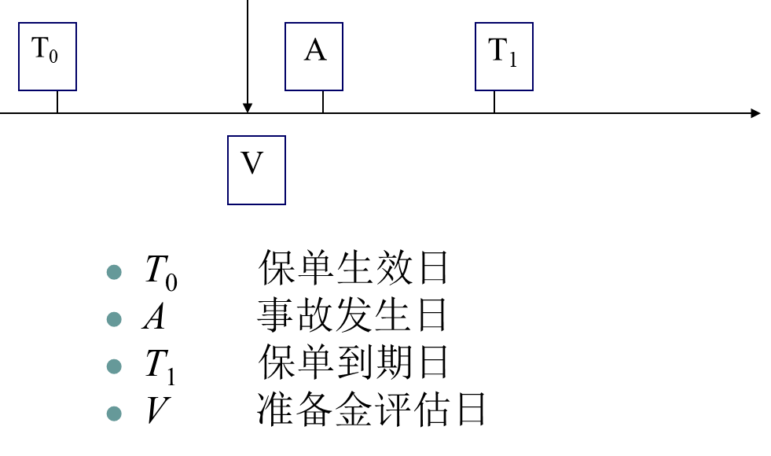

Chapter 8 准备金评估方法
保险行业的一个显著特点是负债经营。也就是说，保险公司在出售保险产品的时候并不知道产品的真实成本，按照会计核算的权责发生制原则，一般需要在每个会计年度末提取各种责任准备金，以应对未来的负债。我们可以将责任准备金理解为: 相对于某一个评估时点，保险公司应承担的保单责任大小的一种估计。一般选取会计年度末作为评估时点。
特别地，对于非寿险公司来说，以 1 年期保单为例，假设保单生效日为 2021 年 5 月 1 日，到期日为 2022 年 4 月 30 日，准备金评估日为 2021年 12 月 31 日。准备金评估日介于保单生效到期日之间。

在准备金评估日，基于会计核算的权责发生制原则，对于过去已经发生的保险事故，在准备金评估时点，一部分可能已经理赔完毕，对应于已支付的赔款部分，也称为已决赔款。而另一部分可能由于存在报案延迟或理赔延迟，尚没有结案，对于这部分尚没有结案的赔款需要提取未决赔款责任准备金( Outstanding Claims Liabilities Ｒeserves) ，也称为索赔准备金 ( Claims Reserves) 或损失准备金( Loss Reserves) 。这部分尚未结案的未决赔款，又可以进一步细分为已报案未决部分和未报案未决部分，其中，已报案未决部分需要提取已报案未决赔款责任准备金; 未报案未决部分需要提取未报案未决赔款责任准备金( Incurred But Not Reported，IBNR) 。一般情况下，我们将已报案未决赔款准备金和未报案未决赔款准备金合起来，统称为索赔准备金。对于尚未满期的保险责任，需要提取未到期责任准备金。索赔准备金和未到期责任准备金合起来就是责任准备金，也就是非寿险公司资产负债表中份额最大的负债。
对责任准备金准确评估主要出于以下一些目的：保险公司的偿付能力评估的需要、保险公司的盈利能力评估的需要、公司经营计划的制定和保险理赔管理的需要。提取充足的责任准备金对于确保保险公司的有足够的偿付能力极为重要。如果不能对责任准备金进行合理的评估就不能对保险公司的财务状况作出正确的判断，评估责任准备金还有利于保险公司估计未来赔款的现金流，有利于公司做出合适的经营计划，此外责任准备金的评估对于公司的理赔人员处理赔案有重要的借鉴作用。
一般来说，未到期责任准备金的评估相对比较简单、直观，而关于索赔准备金的评估，无论从理论方法上还是从实务操作中都存在很多复杂的技术难点，这也是非寿险精算技术得以存在的主要原因之一。
本章将从非寿险准备金的基本进行概述，将重点介绍未决赔款准备金最常用的评估方法（链梯法）。
8.1 相关概念
首先，我们需要对赔款和保费相关概念作以区分。
赔款，或损失，是保险人已付或应付的金额，有时也称作赔付额。
赔款=已付赔款(paid loss)+未决赔款
未决赔款=应付赔款（或个案准备金）+已发生未完全报案赔款（IBENR）+已发生未报案赔款（IBNR）
应付赔款是保险人已经街道报案而预期在未来 将要支付的赔款，通常表现为个案准备金。
已报案赔款=已付赔款+个案准备金
最终赔款（ultimate loss）=已报案赔款+IBNR准备金+IBENR准备金
保费，可以分为承保保费、已赚保费和未到期保费，分别是在一定时期内保险人已经签订了保险合同收到的保费、实际承担了保险责任的保费和正在或即将承担保险责任的保费。
我们常提到的赔付率既是赔款除以保费，赔款可以是已付的、已报案的或预测的最终赔款，保费可以是承保保费或已赚保费。
而对于非寿险业务来说，准备金主要分为三类：未到期责任准备金（未赚保费准备金）、未决赔款准备金和理赔费用准备金。理赔费用准备金为尚未结案的赔案可能发生的费用而提取的准备金。
直接理赔费用准备金：为直接发生于具体赔案的专家费、律师费、损失检验费等而提取的；
间接理赔费用准备金：为非直接发生于具体赔案的费用而提取的。
未决赔款准备金对尚未结案的赔案而提取的准备金，包括
已发生已报案未决赔款准备金（IBNER）：为保险事故已经发生并已向保险公司提出索赔，保险公司尚未结案的赔案而提取的准备金；
已发生未报案未决赔款准备金（IBNR）：狭义上是指保险事故已经发生，但尚未向保险公司提出索赔而提取的准备金。
但是广义上IBNR还包括：已报案但尚未进入理赔程序的准备金、重立赔案的准备金和已发生已报案未决赔款准备金在未来的发展变化。
8.2 未到期责任准备金的评估
未到期责任准备金是在准备金评估日为尚未终止的保险责任而提取的准备金。主要有比例法和风险分布法两种估计方法。
8.2.1 比例法
如果风险的发生在承保期内大致服从均匀分布，即可采用比例法对未到期责任准备金进行评估。根据假设的不同，比例法又可以分为二十四分之一法、三百六十五分之一法等。
8.2.2 风险分布法
风险分布法考虑被评估险种风险发生的实际分布状况，根据未来赔付、费用等支出的预期流量分布来计提未到期责任准备金。风险分布法主要适用于保险期限较长的险种。可以分为：七十八法则、逆七十八法则和流量预期法，其中前两种方法可以认为是流量预期法的特例。
8.2.2.1 七十八法则与逆七十八法则
假设：
- 对于七十八法则，自承保起期开始后，风险的发生呈现逐月等额递减的趋势。对一年期的保单，自承保起期开始，在每月内的风险以比例\(12:11:10:……\)逐月递减。\(12+11+…+1=78\)。
- 对于逆七十八法则，自承保起期开始后，风险以比例\(1:2:3:……\)逐月等额递增。
应用：
一年期保单七十八法则和逆七十八法则的已赚保费比例 承保起期开始后第X月 七十八法则 逆七十八法则 1 12/78 1/78 2 11/78 2/78 3 10/78 3/78 4 9/78 4/78 … … …
问题：
- 对于一个两年期保单，如何应用类似于七十八法则的方法估计未到期责任准备金？
- 分母将会是 \(24+23+…+1=300\)
- 对应的已赚保费分别为：\(24/300、23/300…\)
8.2.2.2 流量预期法
流量预期法则会根据历史经验数据，预先假设该险种的预期损失分布和已赚保费比例，之后评估人员会依据假设评估未到期责任准备金。
| 时间 | 0-12月 | 12-24月 | 24-36月 | 36-48月 | 48-60月 | 60-72月 |
|---|---|---|---|---|---|---|
| 预期损失分布 | 2% | 3% | 10% | 30% | 30% | 25% |
| 已赚保费比例 | 2% | 5% | 15% | 45% | 75% | 100% |
| 未赚保费比例 | 98% | 95% | 85% | 55% | 25% | 0% |
例： 假设某公司 2014 年四个季度财产保险的保费收入依次为 500 万元、230万元、320万元、100万元，假定保费收入呈现均匀分布，请分别按照下列方式计提 2014 年末的未到期责任准备金。
（1）按季平均法（1/8 法） （2）按年平均法（1/2 法） 答案： - 按季平均法（1/8 法） 500×（1/8）+ 230×（3/8）+ 320×（5/8）+ 100×（7/8） = 436.25（万） - 按年平均法（1/2 法） （500 + 230 + 320 + 100） ×（1/2）= 575 万
8.3 未决赔款准备金评估
未决赔款准备金的概念：
已发生已报案未决赔款准备金：保险事故已经发生并已向保险公司提出索赔，保险公司尚未结案。
已发生未报案未决赔款准备金（IBNR）：狭义上是指保险事故已经发生，但尚未向保险公司提出索赔。广义上还包括：
- 已报案但尚未进入理赔程序的准备金
- 重立赔案的准备金
- 已发生已报案未决赔款准备金在未来的发展变化
理赔费用准备金：为尚未结案的赔案可能发生的费用而提取的准备金，可分为
- 直接理赔费用准备金
- 间接理赔费用准备金
常用的未决赔款准备金评估方法有：链梯法 、案均赔款法 、准备金进展法 、B-F法 、广义线性模型（Generalized Linear Models）
8.3.1 链梯法
链梯法是按照流量三角形中各列的比例关系来预测未来赔款数据的一种未决赔款准备金评估方法，主要的数据结构是流量三角形。
流量三角形是保险公司将保险公司历年的保费数据、已决赔款金额或赔款次数可以按事故年和进展年的方式组成一个上三角形，从而对未来的未决赔款金额或赔款次数进行预测。
未决赔款准备金评估的目的是根据流量三角形的上三角部分，预测流量三角形的下三角形部分，即未决赔款金额或未决赔款次数。事故年（Accident year）指的是保单发生保险事故的时间。这是评估IBNR最为常用和最合理的赔款流量三角形数据组织基础。事故年能够真正地反映出未决赔款准备中”已发生但未报告”的规律，揭示了保险事故发生的具体时间段。进展年（Development year）指的是赔付年与事故年之间的时间间隔称。对于同一事故年的保单而言，随着进展年的增加，保险公司在当年的赔付会越来越少，即当进展年足够大的时候，保险公司对该类保单的赔付已经完成， 此时未决赔款准备金为零。
下表绘制了以事故年统计的单个累计赔款流量三角形的一般结构。其中，每一行代表一个事故年，每一列代表一个进展年。事故年的标号分别为: 事故年 0、1、…、I，由于每个事故年的损失在该年内不一定能赔付完全，故引入进展年的概念，相应的进展年的标号分别为: 进展年 0、1、…、J。一般假设 I = J。此时，对角线代表的是最近评估日历年 I( J) 。
| 进展年 | ||||||
|---|---|---|---|---|---|---|
| 事故年 | 0 | 1 | … | J-2 | J-1 | J |
| 0 | \(C_{0,0}\) | \(C_{0,1}\) | … | \(C_{0,J-2}\) | \(C_{0,J-1}\) | \(C_{0,J}\) |
| 1 | \(C_{1,0}\) | \(C_{1,1}\) | … | \(C_{1,J-2}\) | \(C_{1,J-1}\) | |
| … | … | … | … | … | ||
| I-2 | \(C_{I-2,0}\) | \(C_{I-2,1}\) | \(C_{I-2,2}\) | |||
| I-1 | \(C_{I-1,0}\) | \(C_{I-1,1}\) | ||||
| I | \(C_{I,0}\) |
链梯法是索赔准备金评估的经典方法，它基于累计赔款流量三角形评估索赔准备金，假设各个事故年具有相同的进展模式，首先计算出各进展年的进展因子，然后估计出流量三角形下三角的累计赔款数据，在不考虑进展年 J 以后的尾部进展的情况下，估计的最后一列的累计赔款额就是各事故年的最终损失，再减去相应对角线上的累计赔款额，就是相应事故年的索赔准备金，将各事故年的索赔准备金求和就可以得到所有事故年的总的索赔准备金。
基本假设：每个事故年的赔款支出具有相同的发展模式
基本方法：
- 使用已付赔款数据，已付赔款链梯法
- 使用已报案赔款数据，已报案赔款链梯法
扩展：已发生已报案未决赔款准备、已报案案件数、已结案件数、案均赔款
基本思想：“平均”和”稳定”，依据流量三角形各列的比例关系来外推未来的赔款
- 链：后一年与前一年的比率逐年构成
- 梯：精算人员沿着”链”向上攀登，从历史数据中一步步预测未来的最终赔款
链梯法的具体步骤与举例如下：
第一步，构建赔款流量三角形，将赔案按事故年度和进展年度整理为流量三角形模式。
| 累计已发生赔款 | 进展年度 | ||||
|---|---|---|---|---|---|
| 事故年度 | 1 | 2 | 3 | 4 | 5 |
| 2014 | 125168 | 130042 | 135964 | 142374 | 143692 |
| 2015 | 137285 | 141834 | 144862 | 146713 | |
| 2016 | 153763 | 155169 | 155720 | ||
| 2017 | 170877 | 168821 | |||
| 2018 | 141442 |
第二步，根据流量三角形计算进展因子
| 进展因子 | 1-2 | 2-3 | 3-4 | 4-5 | 5-终极 |
|---|---|---|---|---|---|
| 最近4年 | 1.039 | 1.046 | 1.047 | 1.009 | |
| 最近3年 | 1.033 | 1.021 | 1.013 | ||
| 最近2年 | 1.009 | 1.004 | |||
| 最近1年 | 0.988 |
第三步，选择进展因子，并计算累计进展因子。其中进展因子有多种计算方法可供选择，如加权平均法、最高值法、简单算术平均法、最近三事故年加权法等。
| 进展因子 | 1-2 | 2-3 | 3-4 | 4-5 | 5-终极 |
|---|---|---|---|---|---|
| 简单平均 | 1.017 | 1.023 | 1.030 | 1.009 | |
| 加权平均 | 1.015 | 1.022 | 1.029 | 1.009 | |
| 近3期加权平均 | 10.15 | 1.022 | |||
| 近2期加权平均 | 0.998 | 1.012 | 1.029 | 1.009 |
若选择（1）近2期加权平均、（2）加权平均两种方法，分别计算累计进展因子如下。
| 进展因子 | 1-2 | 2-3 | 3-4 | 4-5 | 5-终极 |
|---|---|---|---|---|---|
| 累计进展（1） | 1.050 | 1.052 | 1.039 | 1.010 | 1.001 |
| 累计进展（2） | 1.015 | 1.022 | 1.029 | 1.009 | 1.000 |
第三步，根据累积进展因子计算终极赔款。
| 事故年度 | 2018 | 2017 | 2016 | 2015 | 2014 | 合计 |
|---|---|---|---|---|---|---|
| 累计已发生赔款 | 141442 | 168821 | 155720 | 146713 | 143692 | 756388 |
| 终极赔款（1） | 148467 | 177561 | 161840 | 148181 | 143836 | 779885 |
| 终极赔款（2） | 152465 | 179298 | 161785 | 148071 | 143692 | 785311 |
IBNR=终极赔款-累计已发生赔款
IBNR（1）=23497，IBNR（2）=28923
说明：
进展因子：age-to-age ratio、report-to-report ratio、link ratio、loss development factor (LDF)
已付赔款：赔案实际支付额，客观性较强；没有利用已报案未决赔款准备金的信息；受理赔速度的影响，理赔部门处理赔案的速度每年都可能发生变化，导致赔付延迟模式和进展因子波动较大；基于已付赔款数据的准备金评估会因为理赔速度的变化而被歪曲
链梯法的步骤总结
- 构建累积赔款的流量三角形数据，计算逐年进展因子
- 计算逐年进展因子的平均值（重点）和累积进展因子
- 预测流量三角形中下三角部分的数值，得到最终赔款
- 估计未决赔款准备金：最终赔款-累积已付赔款
对链梯法的批评
从统计的角度看，它是不完善的，因为把一些非独立的数学期望值（进展因子）进行了连乘。事实上，进展因子之间是负相关的
对观察值波动的反应异常敏感
忽略了外生变量对流量三角形可能产生的影响，如理赔速度
链梯法在R软件中的应用
library(data.table)
library(ggplot2)
# 读取数据
# 矩阵形式
cum.triangle <- matrix(data=c(125168, 130042, 135964, 142374, 143692,
137285, 141834, 144862, 146713,0,
153763, 155169, 155720,0,0,
170877, 168821,0,0,0,
141442,0,0,0,0),
nrow = 5,ncol = 5,byrow = TRUE)
colnames(cum.triangle) <- seq(1,5) # 重命名（列名称）
row.names(cum.triangle) <- seq(2014,2018) # 重命名（行名称）
cum.triangle## 1 2 3 4 5
## 2014 125168 130042 135964 142374 143692
## 2015 137285 141834 144862 146713 0
## 2016 153763 155169 155720 0 0
## 2017 170877 168821 0 0 0
## 2018 141442 0 0 0 0# 将数据（矩阵形式）转化为（数据框形式）
claims <- 0
for(i in 1:5){
for (j in 1:5){
obs <- (i-1)*5 + j
claims[obs] <- cum.triangle[i,j]
}
}
dt <- data.table(i = rep(2014:2018, each = 5),
j = rep(1:5, 5),
claims = claims)
dt$i.f <- factor(dt$i)
dt$j.f <- factor(dt$j)
dt.upper <- dt[i + j <= 2019] # 上三角的数据集（建模的数据集）
dt.lower <- dt[i + j > 2019] # 下三角的数据集（需要预测的数据集）
# 画图进行初步分析
p1 <- ggplot(data = dt.upper, aes(x = j.f, y = claims, group = i.f, col = i.f)) +
geom_line() +
geom_point() +
theme_bw() +
xlab('事故年') + ylab('累积赔款')
p1
#计算公式
n <- ncol(cum.triangle)
ratio.f <- function(i){
# 进展因子：加权平均数
sum(cum.triangle[1:i, n-i+1] ) / sum(cum.triangle[1:i, n-i])
}
ratio <- sapply((n-1):1, ratio.f)
tail <- 1 # 尾部进展因子
ratio <- c(ratio, tail)
full.triangle <- cum.triangle
for(k in 1:(n-1)){
full.triangle[(n-k+1):n, k+1] <- full.triangle[(n-k+1):n,k]*ratio[k]
}
full.triangle## 1 2 3 4 5
## 2014 125168 130042.0 135964.0 142374.0 143692.0
## 2015 137285 141834.0 144862.0 146713.0 148071.2
## 2016 153763 155169.0 155720.0 160300.8 161784.7
## 2017 170877 168821.0 172577.0 177653.6 179298.2
## 2018 141442 143555.6 146749.4 151066.3 152464.8ultimate.paid <- full.triangle[,n] # 最终赔款
ultimate.paid## 2014 2015 2016 2017 2018
## 143692.0 148071.2 161784.7 179298.2 152464.8claim.paid <- 0
for(i in 1:5){
claim.paid[i] <- cum.triangle[i, 6 - i]
}
claim.paid## [1] 143692 146713 155720 168821 141442ultimate.paid - claim.paid## 2014 2015 2016 2017 2018
## 0.000 1358.167 6064.737 10477.226 11022.809Total.res <- sum(ultimate.paid - claim.paid)
Total.res## [1] 28922.948.3.2 案均赔款法
链梯法只考虑了赔款的货币信息，没有考虑案件数的影响： 已报案案均赔款（payments per claim incurred, PPCI） 已结案案均赔款（payments per claim finalized, PPCF ）。案均赔款法在链梯法的基础上引入了赔案数目，基于已决赔款数据和已报案赔款数据，对应已决赔案数目和已报案赔案数目。假设案均赔款及相应的赔案数目的流量模型前后具有一致性，可估计未来案均赔款和赔案数目，相乘得到未来最终赔款。
思路：用链梯法分别估计出各事故年的最终案件数与案均赔款，再计算各事故年的最终赔款和未决赔款准备金。
基本假设：不同事故年的案均赔款是相对稳定的。
案均赔款：赔款÷案件数
对案件数的估计：既可以采用已付案件数流量三角形，也可以采用已报案案件数流量三角形。
对案均赔款的估计：用已付案均赔款流量三角形，或已报案案均赔款流量三角形。
案均赔款法步骤：
- （1）构造已付案件数（或已报案案件数）的流量三角形；
- （2）应用链梯法预测最终已付案件数（或已报案案件数）；
- （3）构造已付案均赔款（或已报案案均赔款）的流量三角形；
- （4）应用链梯法，预测最终的已付案均赔款（或已报案案均赔款）；
- （5）用最终已付案件数（或已报案案件数）乘以最终已付案均赔款（或已报案案均赔款），求得最终赔款；
- （6）从最终赔款中减去累积已付赔款，即得未决赔款准备金的预测值。
8.3.3 准备金进展法
定义：基于已付赔款和已发生已报案未决赔款准备金之间的关系。也被称作逐案估计预测法。
分类：
- 报案年准备金进展法：只能对已发生已报案未决赔款准备金的充足性进行评价，但并不能估计未决赔款准备金。 （略）
- 事故年准备金进展法
准备金支付率
- 已付赔款与已报案未决赔款准备金的比例
\[准备金支付率=\frac{c_{i,j+1}}{a_{i,j}}\]
- 对于某一事故年，在上一个进展年末预留的准备金是为了支付以后各进展年内的赔款
- （理想状态）每个年末预留的准备金应等于下一年内应该支付的赔款 + 下一年末应提取的已报案未决赔款准备金
\[a_{i,j}=c_{i,j+1}+a_{i,j+1}\]
准备金结转率
- 第\(i\)事故年发生的赔款在第\(j+1\)进展年末计提的已报案未决赔款准备金与第\(j\)进展年末提取的已报案未决赔款准备金的比例 \[准备金结转率=\frac{a_{i,j+1}}{a_{i,j}}\]
- 相当于 - 已报案未决赔款准备金的进展因子
准备金结转率和支付率的关系
- 准备金结转率 + 准备金支付率 = 1 ： 进展年年初的已报案未决赔款准备金用于支付本年赔款后，剩余部分恰好全部转为本年末的已报案未决赔款准备金
- 准备金结转率 + 准备金支付率 < 1 ： 年初准备金过多，除了应对本年的赔款和转入年末准备金外，还有剩余
- 准备金结转率 + 准备金支付率 > 1 ： 年初准备金不足
基本原理
核心：估计准备金支付率和准备金结转率
思想：沿着两条链进行
- 由准备金结转率得到已报案未决赔款准备金的估计值
- 由准备金支付率得到已付赔款的预测值
- 得到最终赔款预测值 + 未决赔款准备金的估计值
2、事故年准备金进展法
（1）构造已付赔款和已发生已报案未决赔款准备金的流量三角形；
（2）用各个事故年和进展年的已付赔款观察值除以同一个事故年在前一个进展年的已发生已报案未决赔款准备金，求得已发生已报案未决赔款准备金的支付率，并计算和选定各个进展年的平均支付率；
（3）用各个事故年和进展年的已发生已报案未决赔款准备金除以同一个事故年在前一个进展年的已发生已报案未决赔款准备金，求得已发生已报案未决赔款准备金的结转率，并计算和选定各个进展年的平均结转率；
（4）用选定的结转率乘以相应的已发生已报案未决赔款准备金，即可求得已发生已报案未决赔款准备金的预测值；
（5）用选定的支付率乘以相应的已发生已报案未决赔款准备金，即可求得已付赔款的预测值；
（6）从最终累积已付赔款的预测值中减去当前的累积已付赔款，即得未决赔款准备金的预测值。
8.3.4 B-F法
未决赔款准备金评估方法主要有定量、定性两种思路。定量，以数据、方法、模型为主，以索赔数据充足且具有统计稳定性为条件，如以上介绍的链梯法、损失进展法、案均赔付法。定性，依赖于精算师的经验和判断（数据较少）。如赔付率法，根据历史赔付率，结合精算师的经验确定最终赔付率，运用最终赔付率与已赚保费得到最终赔款的准备金。而B-F（Bornhuetter-Ferguson）方法是定性与定量方法的结合，基本思想是将事故年的总赔款分为过去和未来两部分，并将预期赔付率法和链梯法结合起来考虑，然后将两者的估计结果进行加权平均，即，通过已付赔款（或已报案赔款）及其在未来的期望进展估计最终赔款。
基本步骤：
（1）估计期望最终赔款。等于期望最终赔付率乘以事故年的已赚保费。
- 期望最终赔付率可以根据行业平均水平、本公司的赔付率进展趋势等因素进行估计
- 数据有限，可以运用可信度进行调整
（2）对期望最终赔款进行修正。 \[修正后的最终赔款＝已付赔款＋期望最终赔款*（1－1/f）\] 其中\(f\)为已付赔款的累积进展因子，即：\(已付赔款*f＝最终赔款\)。
\[ \begin{aligned} 修正后的最终赔款&= 已付赔款+期望最终赔款*(1-\frac{1}{f})\\ &=已付赔款*f*\frac{1}{f}+期望最终赔款*(1-\frac{1}{f})\\ &=链梯法估计的最终赔款*\frac{1}{f}+期望最终赔款*(1-\frac{1}{f}) \end{aligned} \]
（3） 未决赔款准备金＝修正后的最终赔款－已付赔款 =期望最终赔款×（1－1 / f ） \[ \begin{aligned} 未决赔款准备金&= 修正后的最终赔款－已付赔款\\ &=期望最终赔款*(1-\frac{1}{f}) \end{aligned} \]
| 进展年 | |||||||
|---|---|---|---|---|---|---|---|
| 事故年 | 0 | 1 | 2 | 3 | 4 | 5 | 6 |
| 2014 | 3937 | 4745 | 4876 | 4901 | 5045 | 5119 | 5124 |
| 2015 | 4192 | 4981 | 5189 | 4275 | 5413 | 5375 | |
| 2016 | 3594 | 4418 | 4496 | 4491 | 4517 | ||
| 2017 | 3012 | 4405 | 4762 | 4903 | |||
| 2018 | 3795 | 5021 | 5403 | ||||
| 2019 | 3178 | 3885 | |||||
| 2020 | 2445 |
| 事故年 | 已赚保费（1） | 期望赔付率（2） | 期望最终赔款（3）=（1）*（2） | 已报案赔款的累计进展因子（4） | 未报案赔款在最终赔款中比例（5）=1-1/（4） |
|---|---|---|---|---|---|
| 2014 | 6106 | 80% | 4885 | 1.001 | 0.10% |
| 2015 | 6589 | 80% | 5271 | 1.031 | 3.01% |
| 2016 | 5983 | 80% | 4786 | 1.035 | 3.34% |
| 2017 | 6134 | 78% | 4785 | 1.134 | 11.78% |
| 2018 | 6336 | 78% | 4942 | 1.089 | 8.21% |
| 2019 | 5235 | 78% | 4083 | 1.193 | 16.21% |
| 2020 | 3876 | 78% | 3023 | 1.454 | 31.24% |
已报案赔款*（4）=最终赔款
（5）=1-1/（4）=1-已报案赔款/最终赔款=未报案赔款/最终赔款
| 事故年 | 期望未报案赔款（6）=（5）*（3） | 累积已报案赔款（7） | 修正最终赔款（8）=（6）+（7） | 已付赔款（已知）（9） | 未决赔款准备金（10）=（8）-（9） |
|---|---|---|---|---|---|
| 2014 | 4.8 | 5124 | 5129 | 4967 | 162 |
| 2015 | 159 | 5375 | 5534 | 5065 | 469 |
| 2016 | 160 | 4517 | 4677 | 4321 | 356 |
| 2017 | 564 | 4903 | 5467 | 4323 | 1144 |
| 2018 | 406 | 5403 | 5809 | 4123 | 1686 |
| 2019 | 662 | 3885 | 4547 | 2989 | 1558 |
| 2020 | 945 | 2445 | 3390 | 1998 | 1392 |
| 合计 | 6765 |
- B-F方法的优点：不会受到异常损失结果的影响（例子）
- B-F的最终赔款＝链梯法的最终赔款×（1/f）＋期望最终赔款×（1－1/f）
练习：
下表是某业务 2010-2013 年已付赔款的部分信息，各年的预期赔付率均为 80%，请用链梯法和 B-F 法分别估计 2013 年末的未决赔款准备金。
| 发生年 | 已赚保费 | 2010 | 2011 | 2012 | 2013 |
|---|---|---|---|---|---|
| 2010 | 25000 | 10000 | 5000 | 2000 | 0 |
| 2011 | 30000 | 12000 | 6000 | 2400 | |
| 2012 | 33000 | 14000 | 7000 | ||
| 2013 | 38000 | 17000 |
答案：
| 事故年 | 已赚保费 | 进展年 | |||
|---|---|---|---|---|---|
| 0 | 1 | 2 | 3 | ||
| 2010 | 25000 | 10000 | 5000 | 2000 | 0 |
| 2011 | 30000 | 12000 | 6000 | 2400 | |
| 2012 | 33000 | 14000 | 7000 | ||
| 2013 | 38000 | 17000 |
| 事故年 | 已赚保费 | 进展年 | |||
|---|---|---|---|---|---|
| 0 | 1 | 2 | 3 | ||
| 2010 | 25000 | 10000 | 15000 | 17000 | 17000 |
| 2011 | 30000 | 12000 | 18000 | 20400 | |
| 2012 | 33000 | 14000 | 21000 | ||
| 2013 | 38000 | 17000 |
| 0-1 | 1-2 | 2-3 | |
|---|---|---|---|
| 进展因子 | 1.5 | 1.133 | 1 |
| 0-3 | 1-3 | 2-3 | |
| 累积进展因子(f) | 1.7 | 1.133 | 1 |
| 已付赔款比例(1/f) | 59% | 88% | 100% |
| 未付赔款比例(1-1/f) | 41% | 12% | 0% |
| 事故年 | 已赚保费 | 进展年 | ||||
|---|---|---|---|---|---|---|
| 0 | 1 | 2 | 3 | 未决赔款准备金 | ||
| 2010 | 25000 | 10000 | 15000 | 17000 | 17000 | |
| 2011 | 30000 | 12000 | 18000 | 20400 | 20400 | 0 |
| 2012 | 33000 | 14000 | 21000 | 23800 | 23800 | 2800 |
| 2013 | 38000 | 17000 | 25500 | 28900 | 28900 | 11900 |
| 合计 | 14700 |
| 事故年 | 已赚保费 | 预期赔付率 | 预期最终赔款 | 累积已付赔款 | 修正最终赔款 | 未决赔款准备金 |
|---|---|---|---|---|---|---|
| 2010 | 25000 | 0 | ||||
| 2011 | 30000 | 80% | 24000 | 20400 | 20400 | 0 |
| 2012 | 33000 | 80% | 26400 | 21000 | 24106 | 3106 |
| 2013 | 38000 | 80% | 30400 | 17000 | 29518 | 12518 |
| 合计 | 15624 |